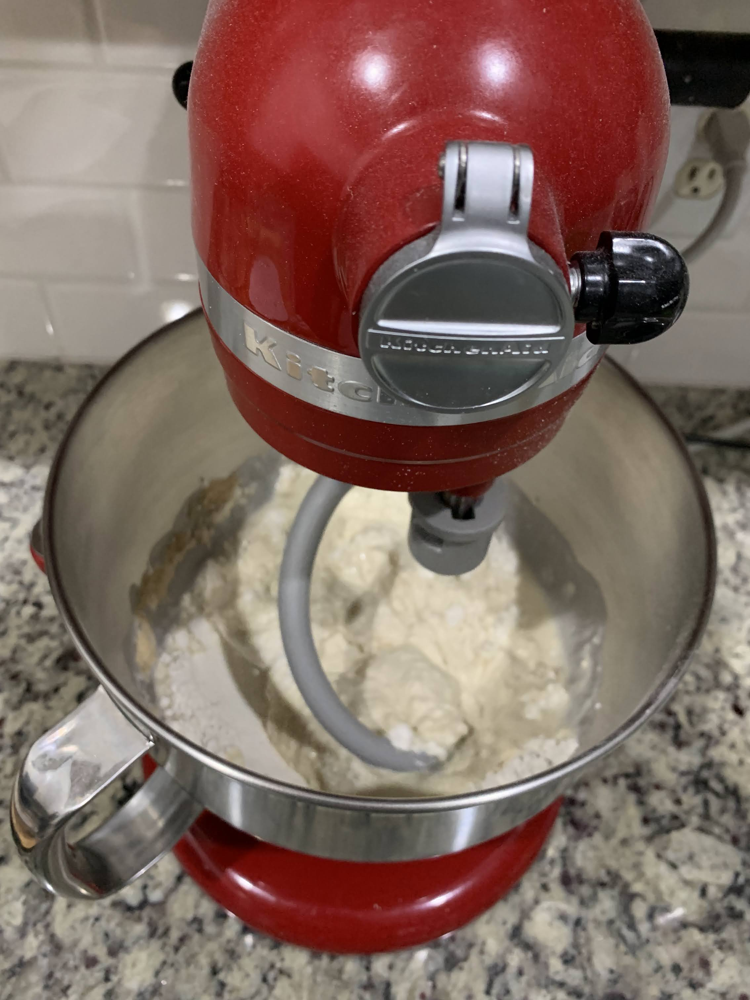
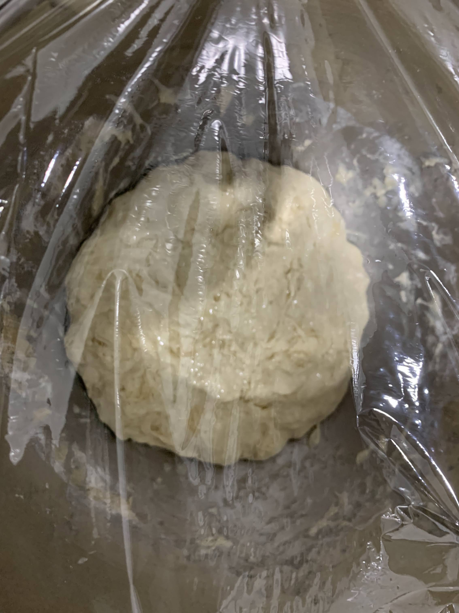
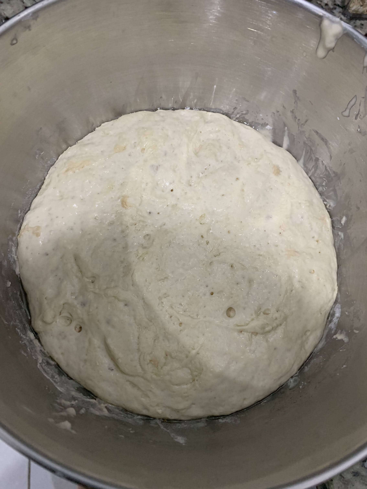
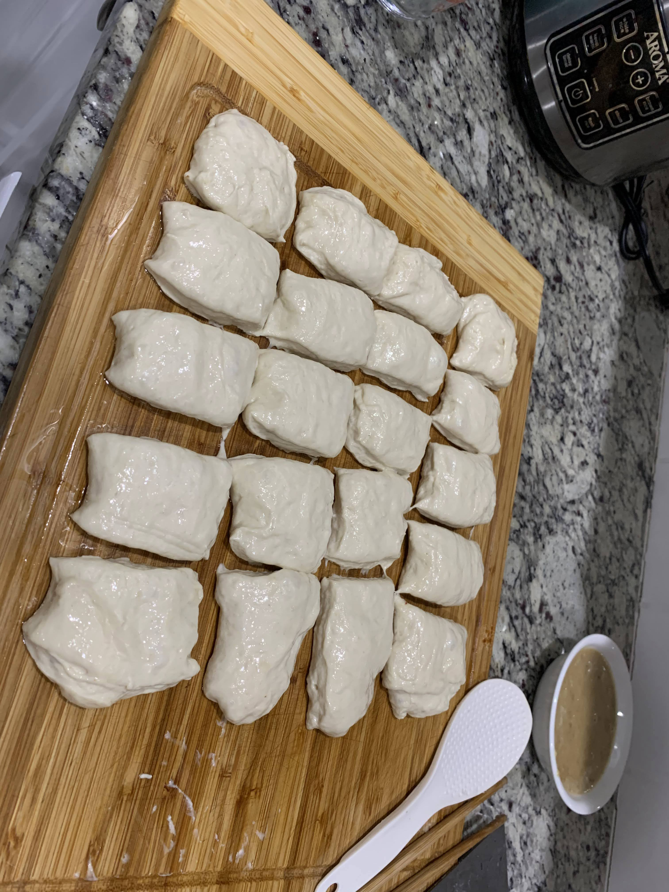
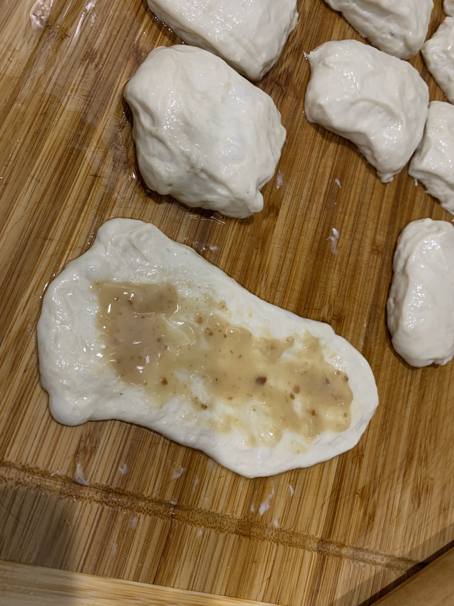
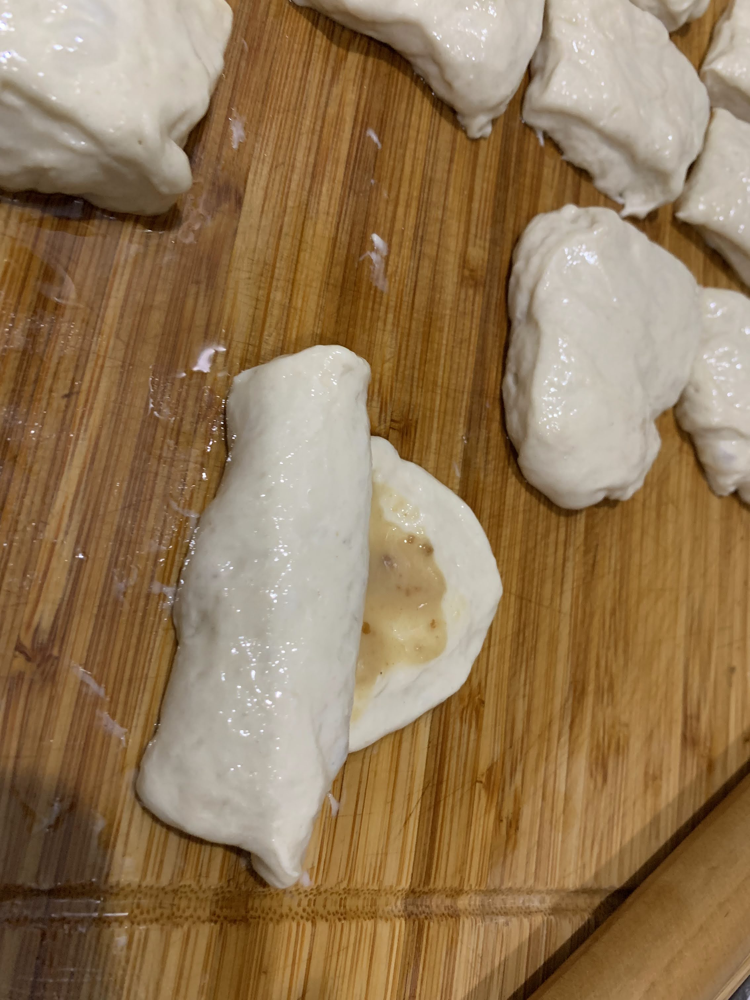
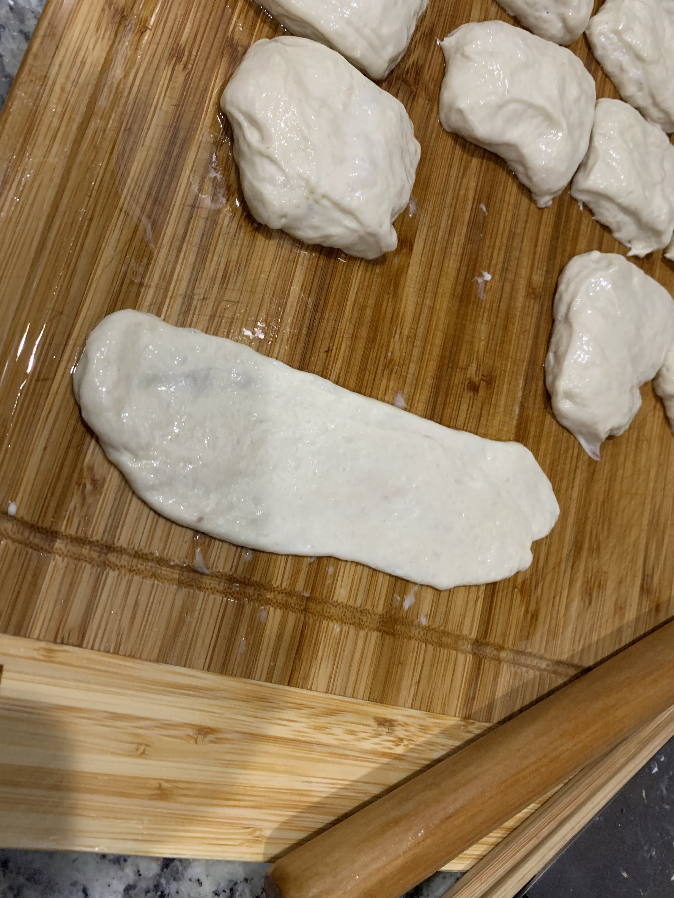
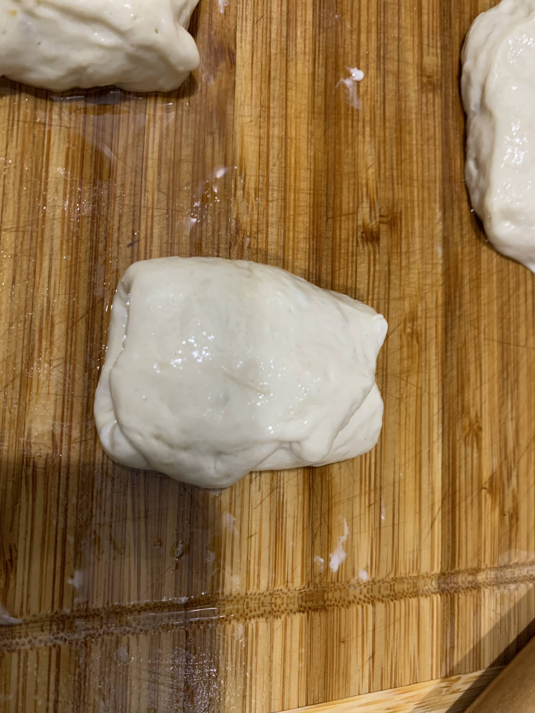
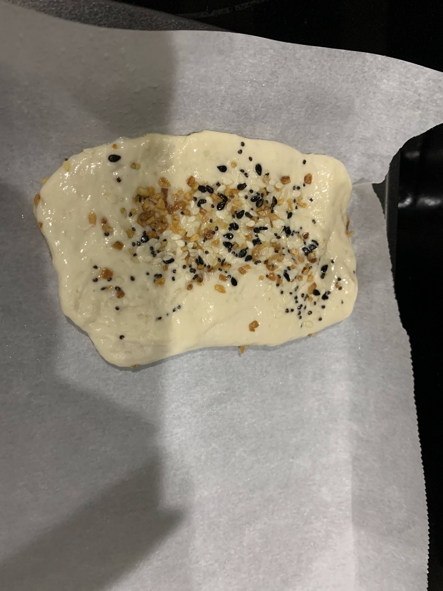
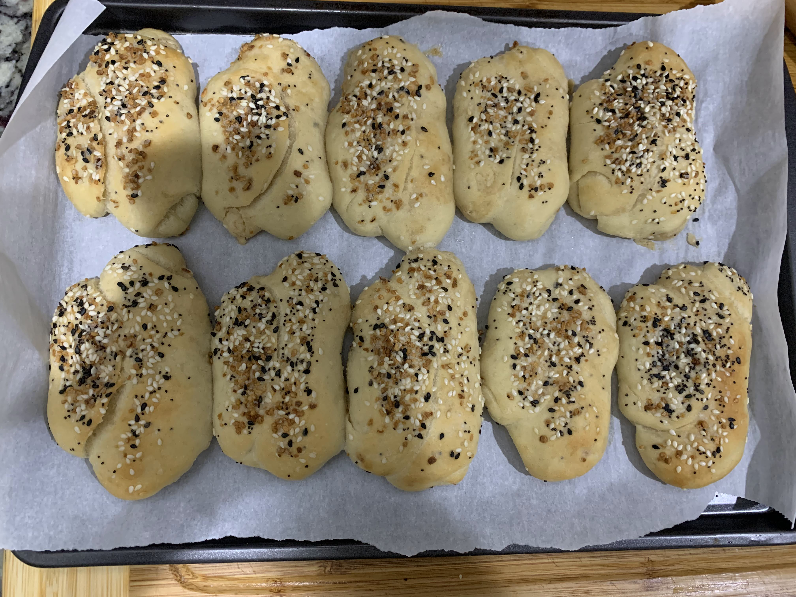

3杯 (1 Cup ~ 8 oz/240 ml) 中筋面粉，温水1.5杯，糖一大匙 (1 Table Spoon ~ 15 ml)，发酵粉2茶匙 (1 Tea Spoon ~ 5 ml)，揉好后放置在温暖的地方发酵至原来的两倍大，发酵时可以涂抹一些油在面团表面避免面团表面干掉



炒锅内放玉米油1/2杯置炉上，开大中火烧至五成热, 倒入中筋面粉1杯，搅拌均匀，再加盐1茶匙和两大匙葱花炒香出锅冷凉
然后将发好的发面团，切成20份做水皮，把水皮擀薄饼， 把一份葱香油酥均匀抹上， 从一端卷成筒，压扁后再沿纵向擀开， 再卷成筒，涂抹芝麻盐，擀开






将做好的香酥烧饼坯放入铺了锡箔纸的烤盘上，继续醒20-40分钟, 放入预热至390华氏度的烤箱内，烤15-20分钟即成
